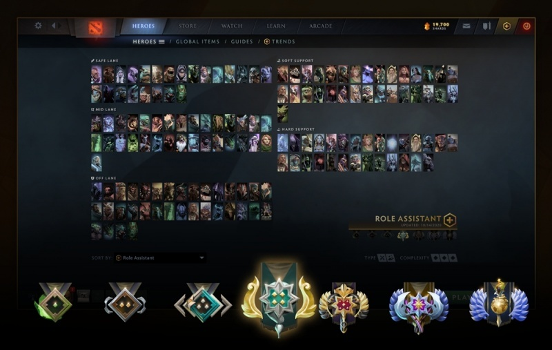

Обновление Dota Plus
Обновление для Dota Plus
Подписчики Dota Plus могут получить осколки не только привычными способами, но и выполняя новые сезонные задания — они принесут до 57850 осколков, которые помогут приобрести побольше сокровищниц.
Теперь подписчики Dota Plus могут пользоваться новой сеткой героев от помощника по ролям. Поскольку сообщество постоянно находит новые способы играть за привычных персонажей, помощник по ролям отслеживает тренды в ролевом рейтинге и отображает наиболее популярных героев на каждой роли. Данные обновляются автоматически, так что они всегда будут актуальными, а ещё их можно отфильтровать по рангу.
Также в Dota Plus перешли некоторые возможности из Боевого пропуска:
- Звуки для колеса чата («Му», «Гром оркестра» и другие) можно приобрести за осколки;
- Таймеры отвода при зажатой клавише Alt теперь доступны подписчикам Dota Plus;
- Подробная статистика лечения и золота включена в существующую вкладку урона для Dota Plus;
- Система выбора самого ценного игрока доступна всем игрокам, но подписчики Dota Plus могут получить осколки за связанное с ней задание.
Кроме того, мы увеличили максимальное число избегаемых игроков с 16 до 25.
Рейтинговый сезон
В прошлом мы видели много недостатков в системе, которая сбрасывала рейтинг всех игроков одновременно. Именно с ними было частично связано наше нежелание проводить перекалибровку каждые 6 месяцев. Недавно мы высказали это нежелание, после чего получили очень много сообщений о том, насколько эта система важна для игроков и как можно решить сложившуюся ситуацию.
В этом сезоне мы подойдём к сбросу рейтинга по-другому. Во-первых, он станет необязательным. Во-вторых, мы будем вводить его для разных игроков постепенно, чтобы не создавать слишком много непредсказуемости (которая и так существует при начале калибровки). Надеемся, так мы избавимся от большинства недостатков при сбросе рейтинга и позволим всем желающим пройти перекалибровку в более стабильной обстановке.